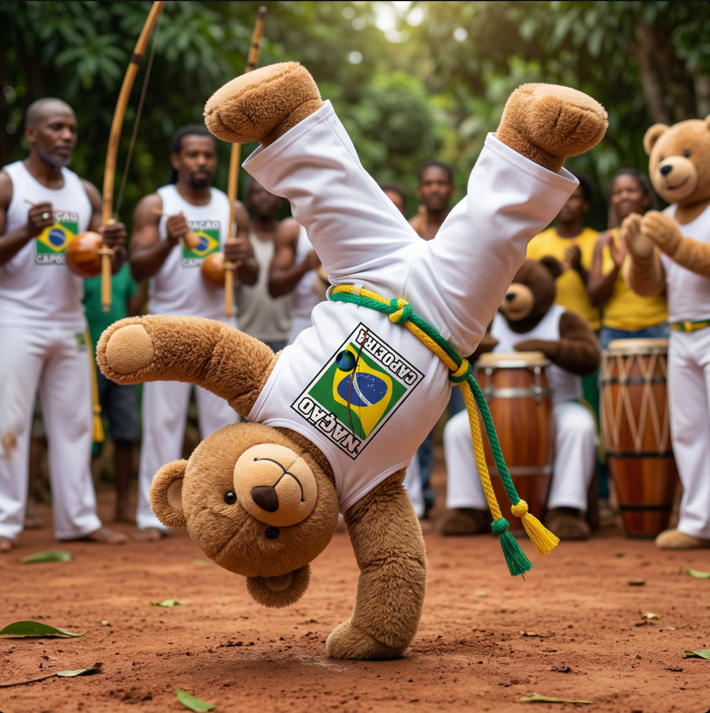

Apprends les rythmes du berimbau, de l'atabaque et du pandeiro. Explore notre bibliothèque de chants et Chante !

Choisis un instrument et regarde ta première vidéo
L'instrument principal de la capoeira
Le berimbau est l'âme de la capoeira. Il dicte le rythme, la vitesse et le style du jogo. Commence ici.
Le cœur percussif de la roda
L'atabaque pose le groove de la roda. Apprends à accompagner le berimbau avec précision et feeling.
La couleur rythmique de l'orchestre
Le pandeiro apporte la légèreté et la couleur au bateria. Commence par la bonne tenue avant tout.
Chants, paroles et audios – filtre par genre